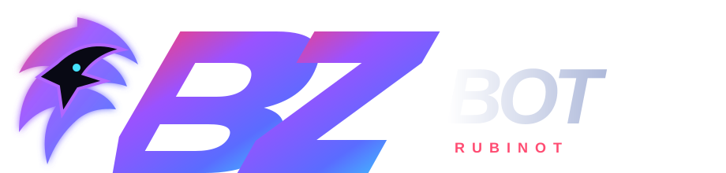
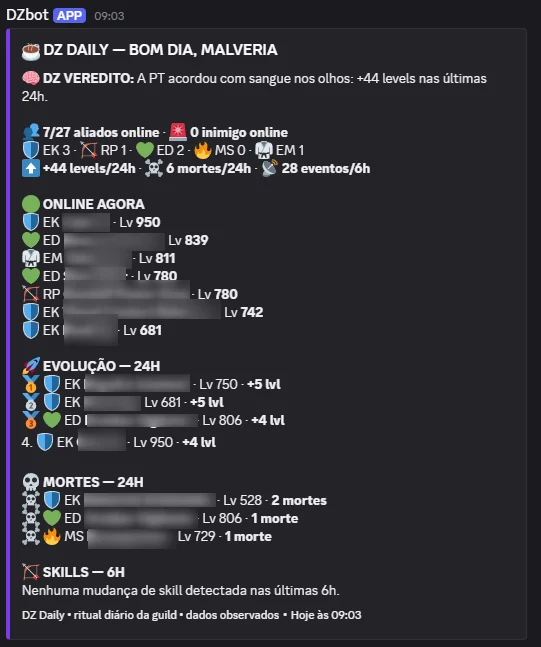
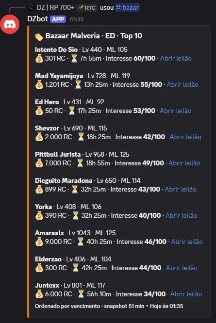
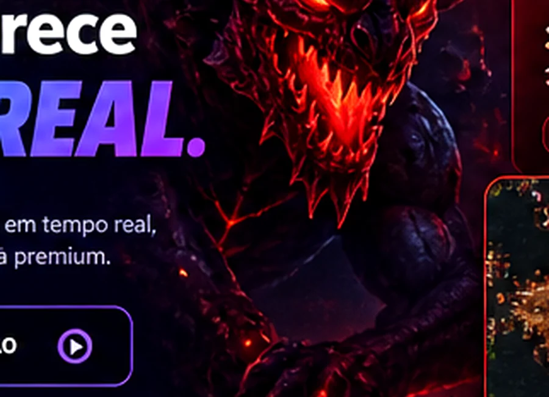
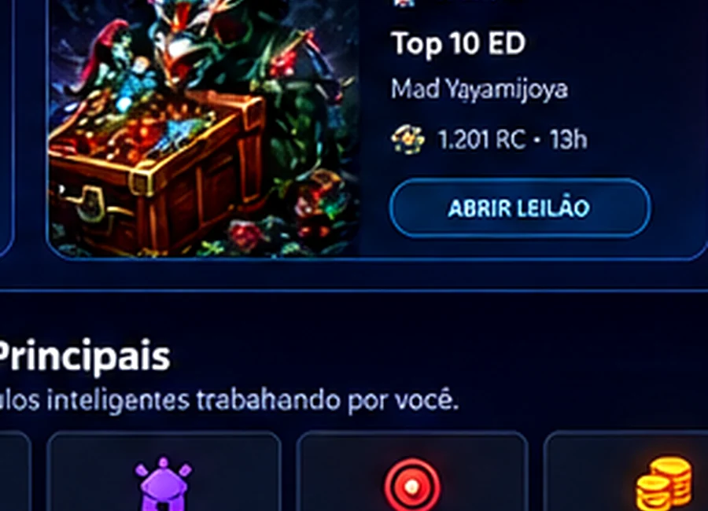
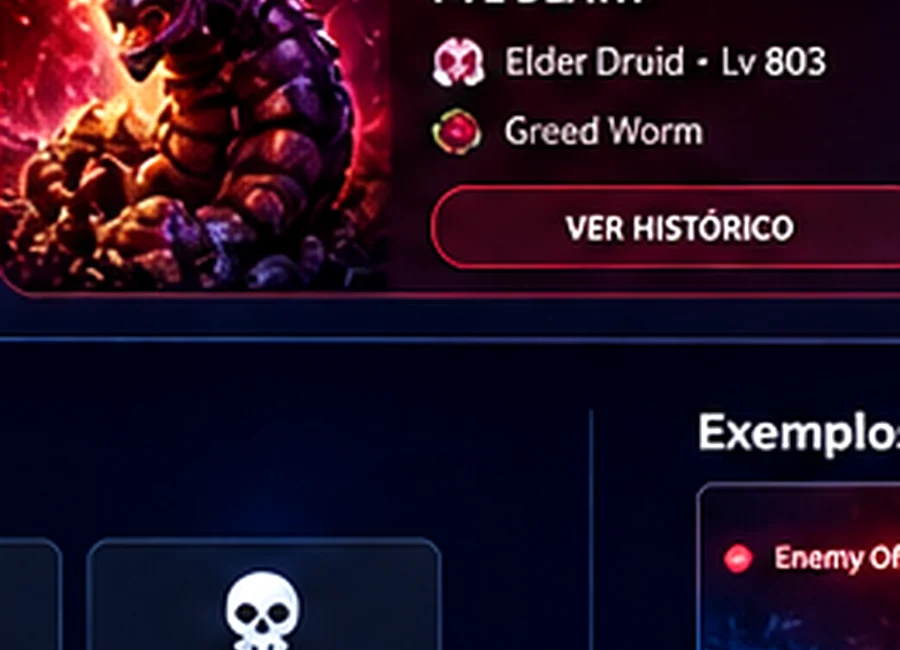
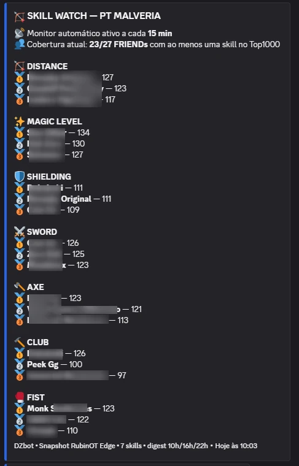
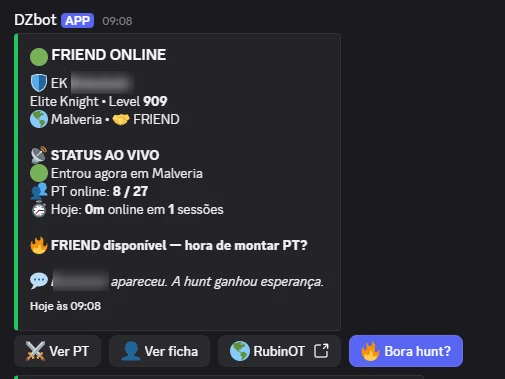
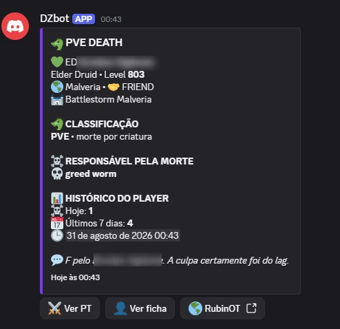

Player Tracker
Online/offline, sessão, level, vocação e PT online.
Explorar →
Solicitar orçamentoO DZbot monitora, organiza e transforma o RubinOT em informação útil dentro do Discord. Menos ruído. Menos troca de tela. Mais contexto para jogar.
🧠 A PT acordou com sangue nos olhos: +44 levels nas últimas 24h.
👥 7/27 aliados online · ☠ 6 mortes/24h
🟢 ONLINE AGORA
🛡 EK · Lv 950
💚 ED · Lv 839
🏹 RP · Lv 780
Online/offline, sessão, level, vocação e PT online.
Explorar →Monitore guild inteira e transforme atividade em contexto.
Explorar →Radar, sinais e janelas de atenção para bosses.
Explorar →Top, filtros, watch e alertas do Bazaar RubinOT.
Explorar →PvE/PvP, histórico e contexto de morte do personagem.
Explorar →Skills Top1000 e mudanças observadas automaticamente.
Explorar →Ritmo, consistência, grinder e padrões do personagem.
Explorar →Resumo diário da guild: online, levels, mortes e eventos.
Explorar →Friends, enemies, watch e movimentação operacional.
Explorar →Evolução, atividade e pressão organizadas por período.
Explorar →Sinais úteis direto no canal certo, sem caça manual.
Explorar →Ambiente isolado e configuração própria por cliente.
Explorar →TeamSpeak + sites + Discord + planilhas + memória.
Comunicação e inteligência no mesmo lugar.
As imagens abaixo são screenshots reais do bot em operação. Dados sensíveis dos personagens permanecem ocultos.





Sinais e níveis de atenção para bosses relevantes.

Filtros, top lists, watches e alertas do Bazaar RubinOT.

PvE/PvP, responsável, histórico e contexto do player.
Cards responsivos, carrossel por toque e exemplos reais pensados para funcionar sem destruir a leitura em telas menores.




Conte como sua guild ou PT joga. A composição é personalizada, sem tabela pública de preços.
Implantação assistida • configuração por servidor • Discord-first